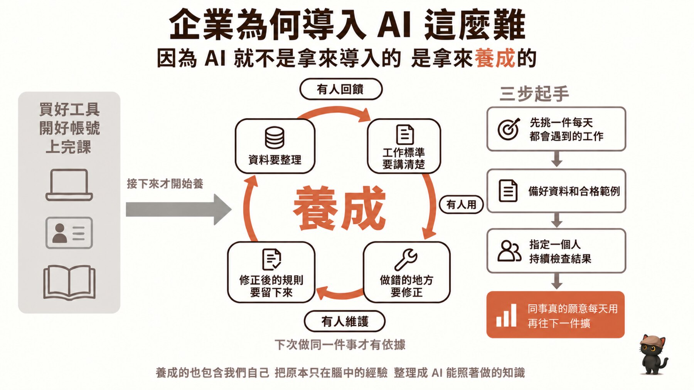
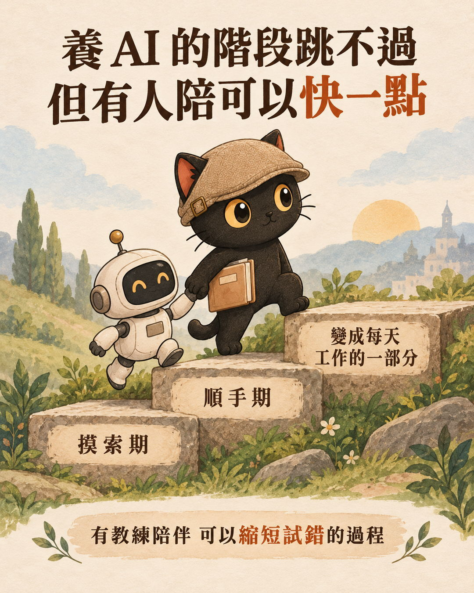
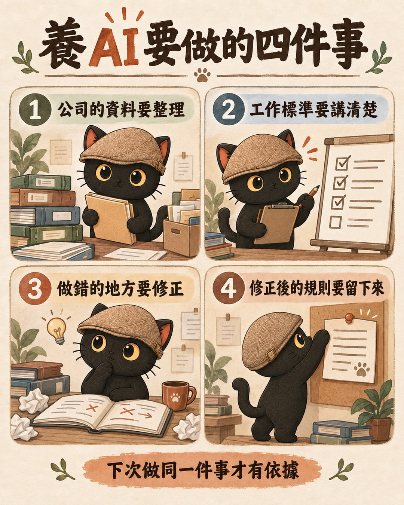
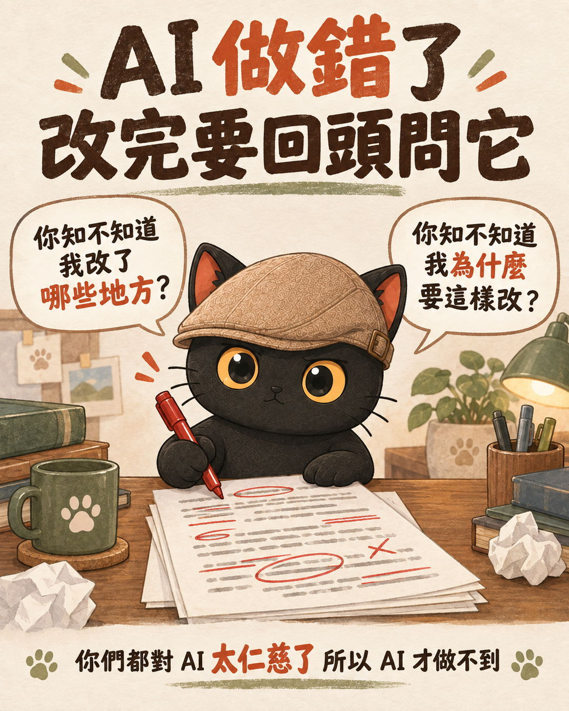
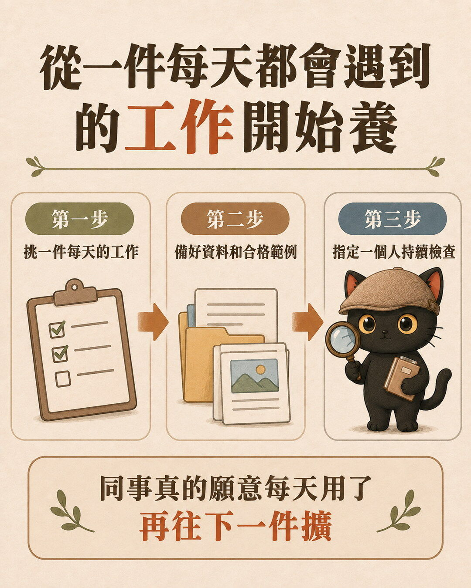
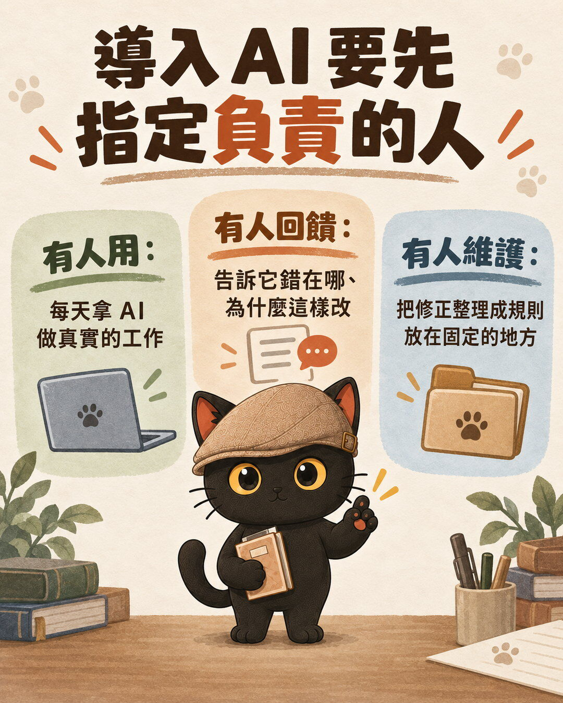
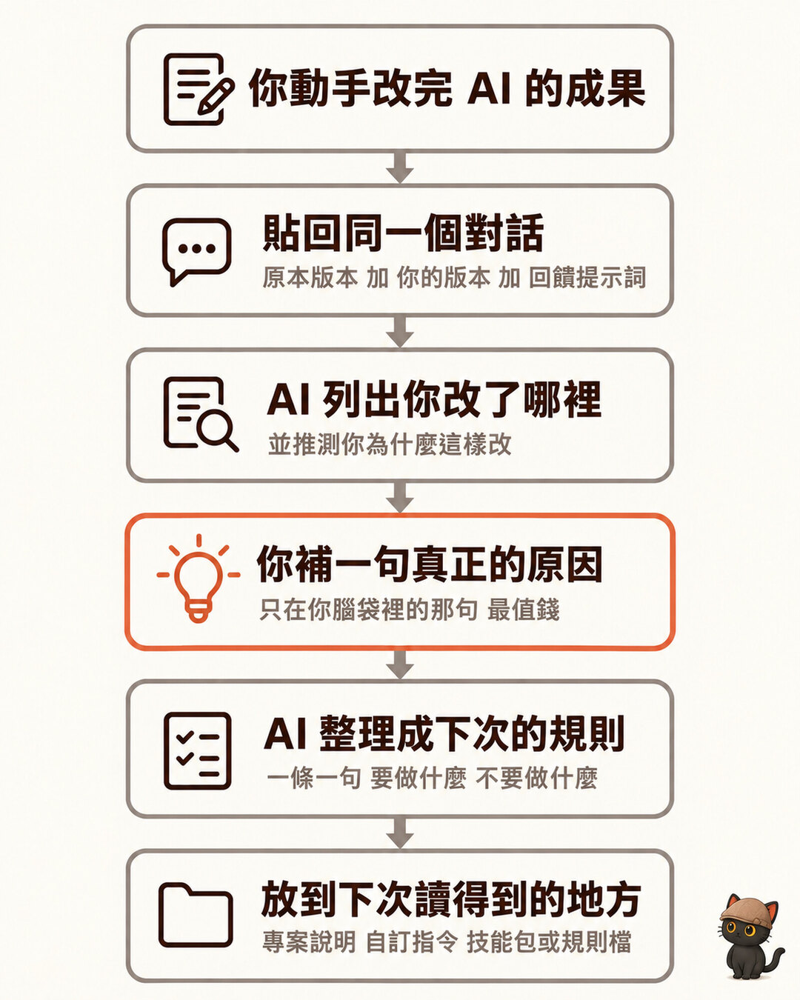
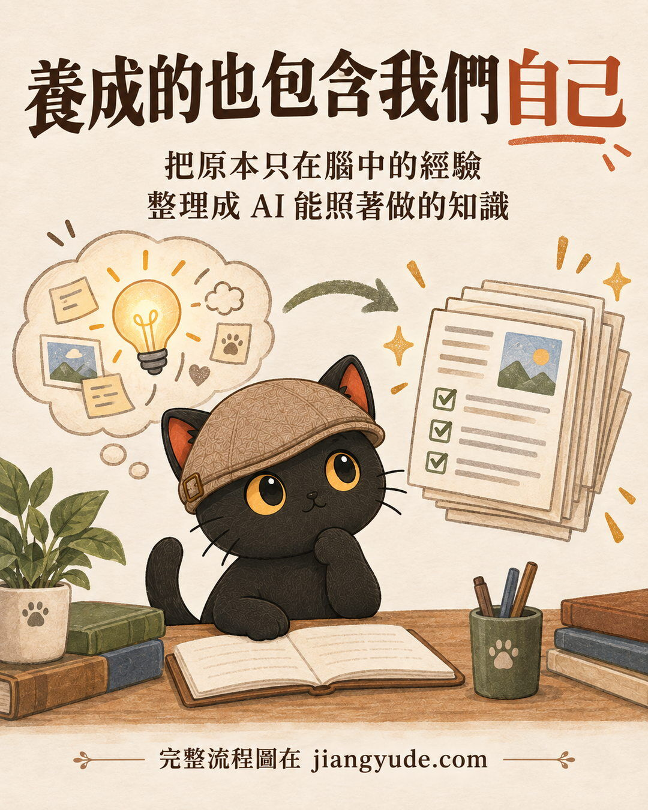

這篇在講什麼
很多公司導入 AI 的方式，是買好工具、開好帳號、請人來上一堂課，然後等大家開始用。結果過幾個月，用的人越來越少。我的看法是，AI 比較像要養成的東西：工具買完那天才開始養。這篇整理養 AI 要做的四件事（整理資料、講清楚工作標準、做錯就修正、把修正後的規則留下來），每一件都附上我最近陪跑時遇到的真實狀況，最後給一套從一件事開始的三步做法，和一段做錯時可以直接貼給 AI 的回饋提示詞。
- 公司已經買了 AI 工具、也上過課，同事卻都沒在用的老闆或主管
- 被交代「去研究一下 AI 怎麼用」，試了幾次覺得 AI 答得怪怪的就放棄的人
- 每次叫 AI 做事都要重講一次要求，覺得還不如自己做比較快的人
- 想幫客戶導入 AI，想知道導入之後要怎麼接著陪的顧問
- 為什麼工具買好、課上完，AI 還是沒人用
- 養 AI 的四件事，各自對應一個陪跑現場
- 誰來用、誰來回饋、誰來維護，這三個角色怎麼分
- 從一件每天都會遇到的工作開始的三步做法
- 一段 AI 做錯時，把修正變成規則的回饋提示詞

工具買好、帳號開好、課也上完，AI 還是沒人用
很多公司決定導入 AI，會依序做三件事：買好工具、開好帳號、請人來上課。做完這三件，大家會覺得導入完成了。
我的看法剛好相反。這三件做完，才開始真正的工作。

導入 AI 不像買一台新機器，插上電就能用，比較像在帶一位新同事。養的過程大概會經過三個階段：
很多公司卡住，是因為把買工具當成終點，第一個月答案怪怪的，就判定 AI 沒用。
這幾個階段沒有辦法跳過。
但是，如果有專業的顧問或教練陪伴，其實可以縮短大家試錯的過程，因為前期的試錯會非常辛苦。像我自己去輔導大家，就會用我這個知識庫累積兩三年的經驗，盡量引導大家，提醒大家哪邊會出錯、哪邊需要防雷、哪邊可以更有效率地整理，把我這幾年的經驗濃縮在一到三個月之內，帶著團隊一起快速把整個架構打起來。
養 AI 要做的四件事：整理資料、講清標準、修正錯誤、留下規則
工具買完之後，接下來要做的事其實很具體：
- 公司的資料要整理
- 工作標準要講清楚
- 做錯的地方要修正
- 修正後的規則要留下來，下次做同一件事才有依據
下面四段，每一件我都用最近陪跑時遇到的狀況來講。案例都經過去識別化，只保留跟這篇有關的部分。

資料要整理：圖片先辨識一次，用途寫進檔名
一位陪跑學員常用 AI 做簡報，要從自己的圖庫挑照片配圖。每次都讓 AI 去看圖片，非常耗 Token（AI 處理與計費的單位），也很慢。
我們的做法是讓 AI 把每張圖片辨識一次，把用途直接寫進檔名：這張通常是封面用、這張是首頁、這張是結尾。之後 AI 只要讀檔名就能配圖。
學員問能不能從過去的簡報整理出這份分類，我的回答是可以，整理完再叫 AI 跟實際用過的比對，有落差就以實際用的為準。
資料整理就是這麼具體的事：把 AI 每次都要重新弄懂的東西，整理成它一讀就懂的樣子。
工作標準要講清楚：先把標準寫出來，AI 才有得對照
同一位學員遇到另一個問題：叫 AI 改簡報，改第五頁的一個字改不好，叫它加一張圖也加不好。
很多人這時候的反應是換一個 AI 試試看，或是再多買一家來互相檢查。我當時跟她說，現在還不用買第二家，因為審核機制都還沒建立，要先把標準寫出來再說。
要 AI 自己檢查，前提是你先給它標準：大標怎麼下、文字多大、圖片怎麼放。標準給了，它才有東西可以對照。沒有標準，換幾家 AI 都一樣在猜。
做錯的地方要修正：改完要回頭告訴 AI 差在哪
那一場陪跑我講了一句話：「你們都對 AI 太仁慈了，所以 AI 才做不到。」
太仁慈的意思是，AI 做錯了，我們自己默默改完就算了，AI 永遠不知道自己錯在哪。下次同樣的事情，它還是照原本的方式做。

我教她的做法是，自己動手改完之後，要回頭問 AI 兩個問題：
- 你知不知道我改了哪些地方？
- 你知不知道我為什麼要這樣改？
答不出來，就直接告訴它：我改了標題、刪了一張照片、補了一張照片，這張照片是為了強調什麼。
就像帶實習生，你接手做完之後，要讓他看「我做的跟你做的差在哪」。這樣做一陣子，八成會變九成，九成會變九成五，到某個點就可以變全自動。
- AI 寫的東西我怎麼確認它是對的？：我自己抓到 AI 偷懶之後，怎麼把那次的修正寫進流程規則，是這一段的完整示範。
修正後的規則要留下來：下次做同一件事才有依據
改過一次，如果沒有留下來，下次開新對話，AI 又忘了。
另一次陪跑，學員開始讓 AI 幫她操作電腦。我們一起定了兩條紅線：註冊或登入帳號一定要先問她，刷卡付錢一定要先問她。
接下來的重點是讓 AI 記住。做法是開一個新視窗，請 AI 想辦法把這兩條規則記死，並請它告訴你應該怎麼記。當時她原本想「記成技能包」（技能包是把做法和規則存成檔案，讓 AI 每次做這件事都會讀），我當場改口：核心目標是記住，不一定要寫成技能包，有更好的方式就用。
我自己判斷要不要留下來的方式很簡單：確定這件事會不停重複做，就做成技能包；做得很好、但不確定下次會不會再做，就寫成工作日記，先記下來，之後要用再找得到。公司裡不用照我的名稱，重點是兩件事有人負責：固定做的事，規則放在 AI 每次都會讀到的地方；還不確定的，先留成紀錄。
從一件每天都會遇到的工作開始：三步做法
前面四件事是要養的內容，那第一個月要從哪裡起頭？我會建議三步：
每天都會做，才有足夠的次數讓 AI 被修正。一個月才做一次的事，養很久都養不起來。
資料是 AI 做事的材料，合格範例就是過去做得好的一份成品，告訴它「做成這樣就對了」。只給資料不給範例，AI 只能自己猜標準。對應四件事的整理資料、講清標準。
這個人負責看 AI 做出來的東西，錯了就照前面的方式回饋，改好的就留成規則。對應四件事的修正錯誤、留下規則，下一段講這個人要扛哪些事。
接下來是擴的時機。從一件事開始，做到同事真的願意每天用，再往下一件擴。

我之前遇過一個單位，老闆一決定導入，就拉一群年輕同仁和各部門主管一起來學，結果自然沒有用，因為大家都很忙，自己的事都做不完。我的建議是先找最需要優化的主管，把一條工作流程做好，讓同仁覺得「我用 AI 就立刻解決我原本的東西了」，大家才會覺得 AI 有用，才會去用。
- 公司請 AI 顧問來陪跑，要叫全部人一起來學嗎？：這一段的導入順序在那篇有完整版，附挑第一條流程的盤點表和流程盤點提示詞。
有人用、有人回饋、有人維護：導入 AI 要先指定負責的人

三步裡被指定的那個人，要扛的不只是檢查。要有人用、有人回饋、有人維護，AI 才會越來越好。
我覺得這就是養成的意思。上面四件事，每一件都需要有人做：
| 角色 | 要做什麼 | 對應前面哪件事 |
|---|---|---|
| 有人用 | 每天拿 AI 做真實的工作，不是只在上課時用 | 資料整理、標準有沒有用，要靠實際用了才知道 |
| 有人回饋 | AI 做錯時，告訴它錯在哪、為什麼這樣改 | 做錯的地方要修正 |
| 有人維護 | 把修正整理成規則、技能包或資料，放在固定的地方 | 修正後的規則要留下來 |
這三個角色不一定是三個人。小公司常常是同一個人兼著做，重點是要有一個人被指定出來，持續檢查 AI 的結果。
AI 做錯時可以直接貼的回饋提示詞
下面這段，是把前面「做錯要修正、修正後要留下規則」整理成一段提示詞。在你改完 AI 的成果之後，在同一個對話裡（ChatGPT、Claude 或 Gemini 都可以），把你改好的版本和它原本的版本一起貼給它，再貼上這段：

我剛剛修改了你做的成果，上面是你原本的版本和我修改後的版本。 請你回答： 1. 你知不知道我改了哪些地方？請逐條列出。 2. 你覺得我為什麼要這樣改？請逐條說明你的推測。 3. 如果你的推測和我的原因不同，我會告訴你，請以我說的為準。 確認原因之後，請把這次的修正整理成「下次做同一件事要遵守的規則」， 每條規則一句話，寫出要做什麼、不要做什麼。 最後告訴我：這些規則適合放在哪裡，才能讓你下次做同一件事時一定讀得到。
第三題很重要。AI 推測的原因常常跟你真正的原因不一樣，這時候你補一句真正的原因，那一句就是最值錢的規則，因為它只在你腦袋裡。
最後一題的答案依你用的工具而定，可能是專案說明、自訂指令、技能包或一份規則檔。放在哪裡都可以，只要下次一定讀得到。
- 我明明都講過了，AI 為什麼還要再問我？：怎麼把重複講的判斷寫成標準，讓 AI 自己檢查自己，是「規則留下來之後」的下一步。
養成的也包含我們自己：把腦中的經驗整理成 AI 能照做的知識
最後一件事，是我在陪跑裡最常遇到的。
最近幫一個農業團隊盤點流程，對方補了一份 73 步的流程文件，看起來已經很完整。結果拿去跟會談逐字稿一對，會中談最久的三條工作線，一條都沒有畫進去。
這些沒畫進去的工作線，很可能就是員工知道怎麼做、卻從來沒寫下來的經驗。AI 讀不到你腦袋裡的東西，你沒寫下來的，它就不會做。
所以養成的也包含我們自己。把原本只在腦中的經驗，一次一次整理成 AI 能照著做的知識。前面講的四件事，整理資料、講清標準、修正錯誤、留下規則，其實都是在做這件事。

- 公司請 AI 顧問來陪跑，要叫全部人一起來學嗎？：先找關鍵主管把一條流程做好，再複製給其他人
- AI 寫的東西我怎麼確認它是對的？：抓到 AI 偷懶之後，把它寫進流程規則
- 我明明都講過了，AI 為什麼還要再問我？：把重複的判斷寫成標準，讓它自己檢查自己
- 想用 AI 提升效率，結果都在瞎忙？：動手之前先刪掉不必要的步驟，再簡化，最後才自動化
想一起把 AI 養起來
我每月固定舉辦兩場免費線上講座，分享實戰經驗與方法論。場次會先在 LINE 社群公布，想持續學習，或是有陪跑、顧問需求，都歡迎先從社群開始。
主要討論：善用 AI 作為思考夥伴、把知識和經驗整理成提示詞、技能包、知識庫。